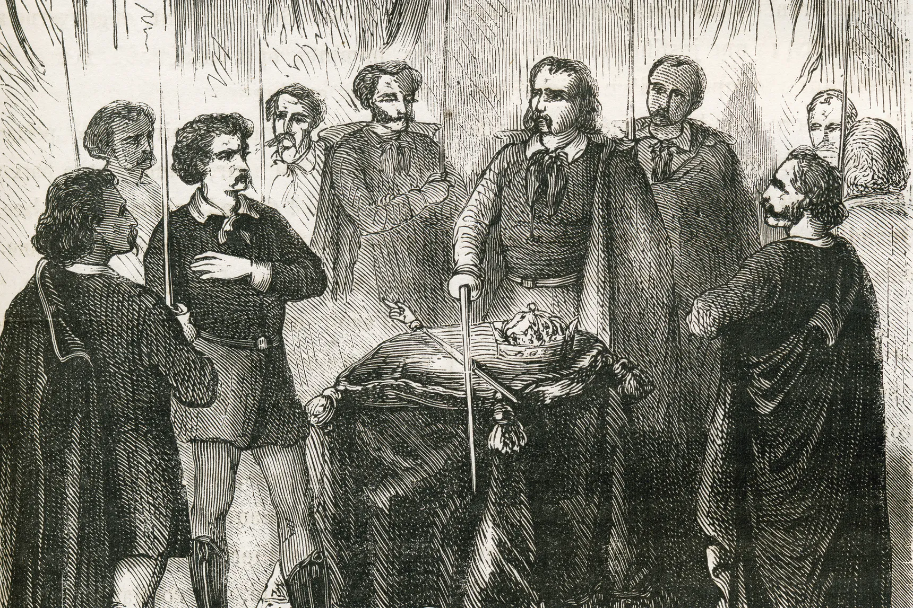
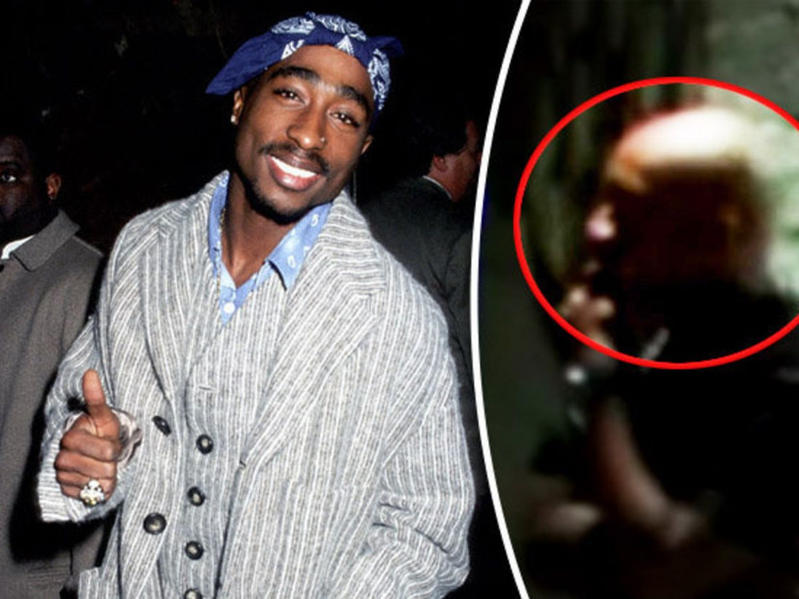
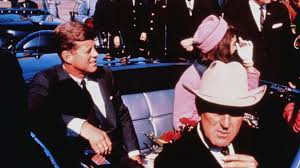
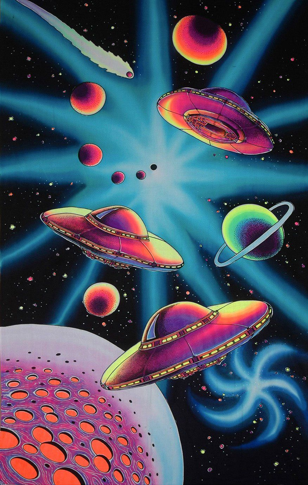
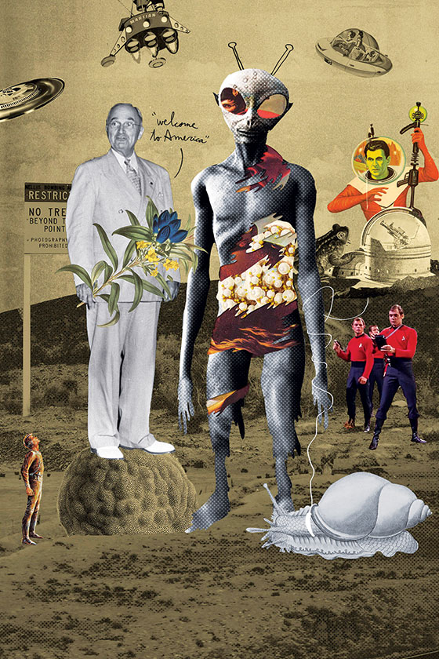
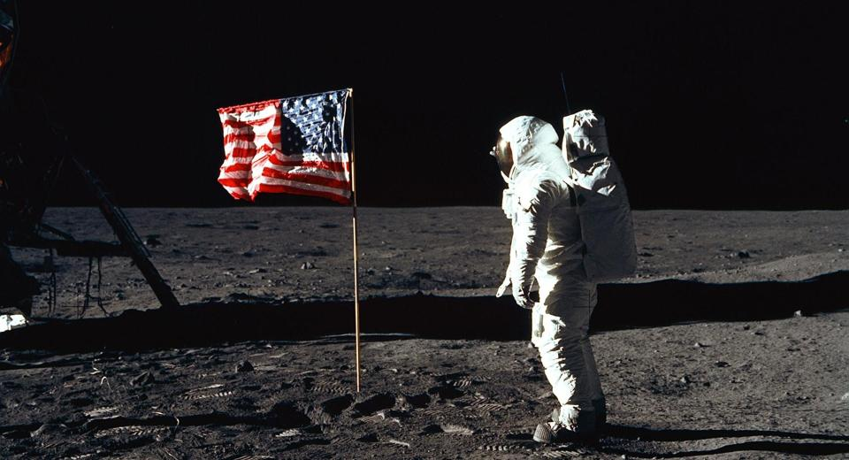
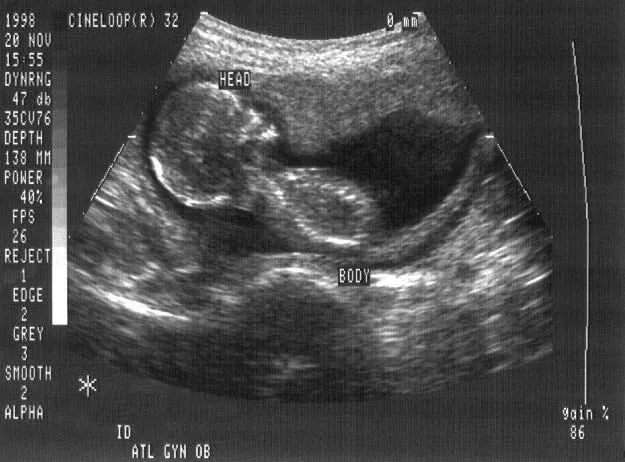
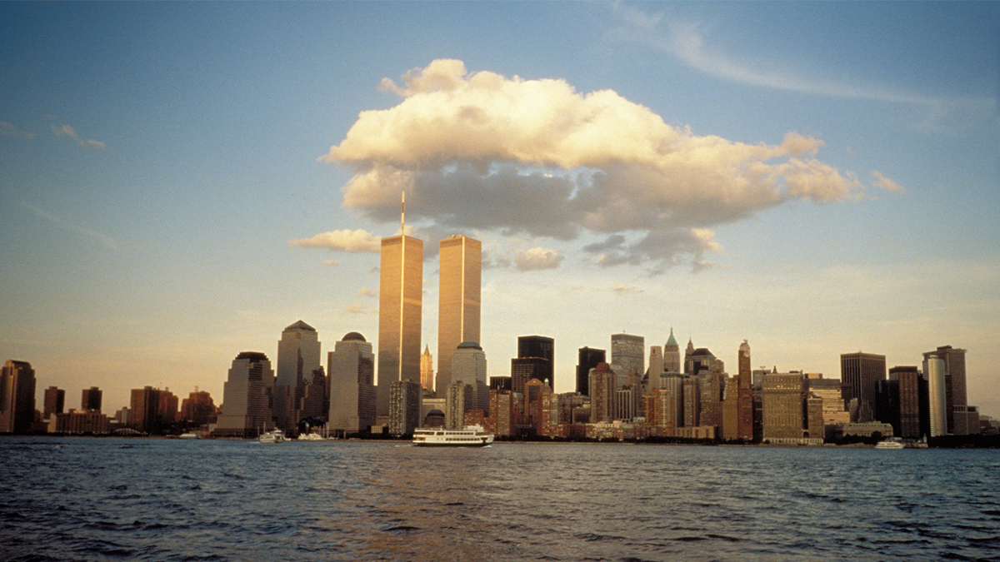

Illuminati

The word is the plural of the Latin illuminatus (“revealed” or “enlightened”)
Illuminati has been the answer to conspirators' answer to assasination attempts, the music industry and all other unanswered questions.
Over 200 years ago it was founded "to oppose religious religious influence on society and the abuse of power by the state by fostering a
safe space for critique, debate and free speech." In 1785 Duke of Bavaria, Karl Theodore banned secret societies. Completely eliminating the
original organization.
Tupac is alive

Tupac was shot September 7 1996 and died 6 days later on the 13. Since his death, it was hard for the public to believe that the rapper who inspired so many
was truly gone. one of the most popular theories revolving around Tupacs death, is he knew of the assassination plan and switched with a body double and is
now living in Cuba with Assata. One of the reasons people believe Tupac is still residing on this Earth, is his friend's and families' haven't of denied
these theories outright.
The JFK Assassination

Chief Justice Earl Warren concluded that Lee Harvey Oswald alone had fired the shots killing John F. Kennedy. Many conspiracy theorists believe Kennedy's
death was the result of CIA agents acting either out of anger over the Bay of Pigs or on behalf of President Lyndon Johnson. Some say by KGB operatives, or
possibly Mobsters upset at Kennedy's brother for starting the prosecution of organized crime rings.
Area 51 and the Aliens

The Air Force says that Area 51 is a base used to test military aircraft and personnel, but Conspiracy theorists have other ideas. Many believe that the remains
of crashed UFO spacecraft are stored at Area 51 where government scientists reverse-engineer the aliens' highly advanced technology. Aliens are also believed to
be hidden deep within the base where scientists are conducting experiments on them.
Harry Truman Alien cover-up

In 1947 there was a supposed crash and Alien spacecraft outside Rosewell, New Mexico. It is believed that President Truman operated a secret group called
"Majestic 12" filled with scientists, military, and government officials to keep the discovery of aliens a secret from society, having this information
passed down through every presidency.
Apollo landing was fake

Doubters say the U.S. government, desperate to beat the Russians in the space race, faked the lunar landings, with Armstrong and Buzz Aldrin acting out
their mission on a secret film set, located (depending on the theory) either high in the Hollywood Hills or deep within Area 51. With the photos and videos
of the Apollo missions only available through NASA, there's no independent verification that the lunar landings were anything but a hoax.
Fetus farming

One of the darker conspiracy theories to come out in the past few years is the allegations of Planned parenthood conspiring to harvest baby organs to the black market
as well as U.S Tax-funded research companies. According to "Lifenews" article on Planned parenthood leaders admitting under oath that they have harvested body parts
from fetuses that were still alive during an abortion. One of the quoted testimonies in the article came from
"Jon Dunn, CEO of Planned Parenthood of Orange & San Bernardino Counties in California. His affiliate used to work with the fetal tissue companies DaVinci Biosciences and DV Biologics, which were shut down in 2017 after the Orange County District Attorney accused them of illegally selling aborted baby body parts. The companies agreed to close permanently and pay $8 million in a settlement"
while there are many questions yet to be answered on this bizarre occurance, the unknown only seems to fuel conspiracy theorists.
Reptilian Bloodline
Conspiracy theorist and former BBC sports reporter David Icke claims
that certain members of the elite, like Queen Elizabeth II—are “Annunaki,” a band of reptile humanoids.
The lizard-people are world leaders and public figures, and they are responsible, he claims, for 9/11 and the Holocaust.
9/11 Was an "Inside" Job

Even as the smoke was still rising from the ruins of the World Trade Center and the Pentagon in September 2001, conspiracy theories sprang up blaming the attacks on anyone but al-Qaeda.
The specific claims varied. The 9/11 attacks were an inside job. Carefully placed explosives rather than commercial passenger jets brought down the Twin Towers.
The U.S. military fired missiles that struck the Pentagon. The Bush administration knew of the impending attacks but did nothing.
Israel orchestrated the attacks as a false-flag operation.